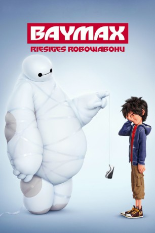

Auszeichnungen: 1 Oscars gewonnen
 gesehen am 11.02.2018
gesehen am 11.02.2018Alternativ: Big Hero 6
Auszeichnungen: 1 Oscars gewonnen gesehen am 11.02.2018
 
 IMDB-Wertung: 7.8 / 10
IMDB-Wertung: 7.8 / 10  Metascore:
Metascore: 
Hiro Hamada ist ein brillanter Teenager und lebt in der futuristischen Stadt San Fransokyo ein relativ normales Leben. Zumindest solange, bis ihm sein Bruder Tadashi den aufblasbaren Roboter Baymax baut, zu dem Hiro schnell eine ganz besondere Beziehung entwickelt. Baymax' tatkräftige Unterstützung kann der aufgeweckte Junge definitiv gut gebrauchen, droht doch schon bald eine kriminelle Organisation damit, seine Heimatstadt zu zerstören. Mit der Hilfe von Baymax und seinen Freunden Go Go Tomago, Wasabi, Honey Lemon und Fred beschließt Hiro, alles zu tun, um die Katastrophe zu verhindern.
Jahr: 2014
Dauer: 102 Minuten
FSK: 6
Land: USA Studio: Walt Disney Studios Motion PicturesTonspuren: DTS - ,
Untertitel: Deutsch,
Auflösung: 1080p (1920x808) Größe: 5345 MB
Genre: Animation/Trick, Action, Abenteuer, Komödie, Drama, Familie, Sci-Fi
Regisseur: Don Hall, Chris Williams
Drehbuch: Jordan Roberts, Robert L. Baird, Daniel Gerson, Man of Action, Steven T. Seagle
Soundtrack: Henry Jackman
Darsteller:
 Scott Adsit als Baymax
Scott Adsit als Baymax T.J. Miller als Fred
T.J. Miller als Fred Jamie Chung als Go Go
Jamie Chung als Go Go Damon Wayans Jr. als Wasabi
Damon Wayans Jr. als Wasabi Genesis Rodriguez als Honey Lemon
Genesis Rodriguez als Honey Lemon James Cromwell als Robert Callaghan
James Cromwell als Robert Callaghan Alan Tudyk als Alistair Krei
Alan Tudyk als Alistair Krei Maya Rudolph als Cass
Maya Rudolph als Cass Abraham Benrubi als General
Abraham Benrubi als General Katie Lowes als Abigail
Katie Lowes als Abigail Kirk Baily als Additional Voice
Kirk Baily als Additional Voice June Christopher als Additional Voice
June Christopher als Additional Voice Cam Clarke als Additional Voice
Cam Clarke als Additional Voice David Cowgill als Additional Voice
David Cowgill als Additional Voice Terri Douglas als Additional Voice
Terri Douglas als Additional Voice Nicholas Guest als Additional Voice
Nicholas Guest als Additional Voice Yuri Lowenthal als Additional Voice
Yuri Lowenthal als Additional Voice Tim Mertens als Additional Voice
Tim Mertens als Additional Voice Marcella Lentz-Pope als Additional Voice
Marcella Lentz-Pope als Additional Voice Stan Lee als Fred's Dad
Stan Lee als Fred's Dad Frank Welker als Mochi , uncredited
Frank Welker als Mochi , uncredited Paul Briggs als Yama
Paul Briggs als Yama Bridget Hoffman als Additional Voice
Bridget Hoffman als Additional Voice Kelly Hoover als Additional Voice
Kelly Hoover als Additional Voice Shane Sweet als Additional Voice
Shane Sweet als Additional VoiceDatei: X:\Kinder Disney HD\2000-2018\Baymax - Riesiges Robowabohu (2014, FSK6, 1920x808).mkv seit 02.03.2015
Festplatte: Kinder-Filme+Trick
 Es gibt insgesamt 45 Filme in der Gruppe 'Kinder Disney HD\2000-2018'
Es gibt insgesamt 45 Filme in der Gruppe 'Kinder Disney HD\2000-2018'